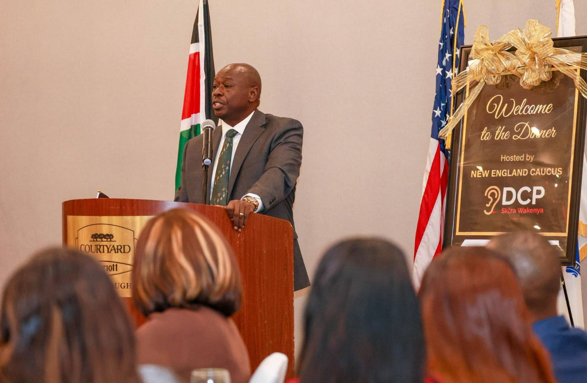

Gachagua alleges late Zimbabwean tycoon Chivayo held KSh1.5 trillion for Ruto, offers no evidence
News
Former Deputy President Rigathi Gachagua has alleged that late Zimbabwean businessman Wicknell Chivayo was holding more than KSh1.5 trillion belonging to President William Ruto when he died. He made the claims while speaking to clergy in Boston, in the United States, without providing evidence for them. The remarks were made on Sunday, October 4, 2026.
According to Gachagua, Chivayo was used to move and store money for the President, and he alleged that dollars were flown by plane to private airstrips. The figure he cited, KSh1.5 trillion, is equivalent to about US$11 billion. He also accused the President of having stolen the money and linked Chivayo to his earlier allegations about the procurement of election technology ahead of the 2027 General Election. Gachagua Claims Chivayo Held KSh1.5 Trillion for Ruto.
One report noted that there is no independent evidence showing that Chivayo held such funds for Ruto, and that neither the President nor his representatives had publicly responded to the allegation when it was published.
Chivayo and his wife, Lucy Muteke, were among six people killed when a helicopter crashed in Marondera, Zimbabwe, on the evening of Wednesday, September 30. Zimbabwe's Civil Aviation Authority said preliminary observations showed that the helicopter hit the ground, spilling fuel that ignited, and investigators have begun examining what caused it to go down. No cause has been announced. arkansasonline
After the crash, President Ruto mourned Chivayo, whom he called a "dear friend," and sent condolences to the bereaved families. The two were known to be close, with Chivayo a frequent sight at State House and national events. Kenyan opposition figures had earlier questioned his repeated access to Ruto and State House. President Ruto mourns ‘Dear Friend’ Wicknell Chivayo killed in chopper crash.
The allegation adds to Gachagua's wider criticism of the President. In August he accused Ruto of capturing the state and using the presidency to enrich himself. The government has not been shown to have responded to the Chivayo claim, so this story will be updated if it does.